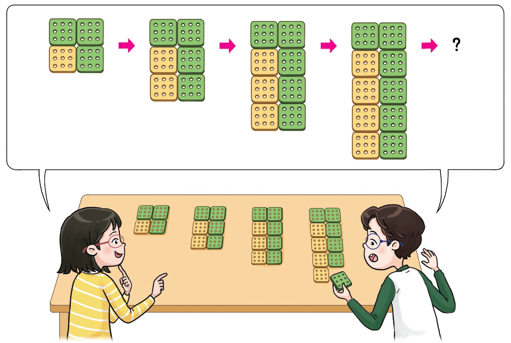

- 그림
- 물음 1
- 물음 2
- 물음 3
- 물음 4
- 물음 5
-

-
노란색 사각판과 초록색 사각판으로 모양을 어떻게 만들었는지 살펴보세요.
예맨 위에 초록색 사각판을 2개 놓고 그 아래에 노란색 사각판과 초록색 사각판을 1개씩 놓습니다. 그렇게 놓인 노랑-초록 줄이 한 줄씩 늘어납니다. -
위 모양에서 변하는 부분과 변하지 않는 부분을 찾아보세요. 변하는 부분은 어떻게 변하는지 말해 보세요.
위에 있는 초록색 사각판 2개는 변하지 않고, 그 아래에 있는 노란색 사각판과 초록색 사각판의 수가 1개씩 늘어납니다. -
모양에서 변하는 부분과 변하지 않는 부분을 생각하며, 노란색 사각판의 수와 초록색 사각판의 수가 어떻게 변하는지 표를 이용하여 알아보세요.
노란색 사각판의 수(개) 1 2 3 456······ 초록색 사각판의 수(개) 345678······ -
노란색 사각판이 20개일 때 초록색 사각판은 몇 개가 필요할까요? 표나 그림을 대응 그리지 않고 어떻게 알 수 있는지 말해 보세요.
22개예22개초록색 사각판은 노란색 사각판과 같은 수만큼 한 줄이 있고, 맨 위에는 항상 초록색 사각판 2개가 있기 때문에 초록색 사각판은 22개입니다. -
노란색 사각판의 수와 초록색 사각판의 수 사이의 대응 관계를 써 보세요.
예초록색 사각판의 수는 노란색 사각판의 수보다 2개 많습니다.